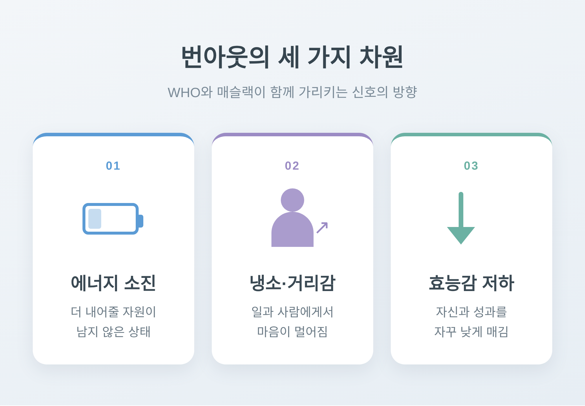
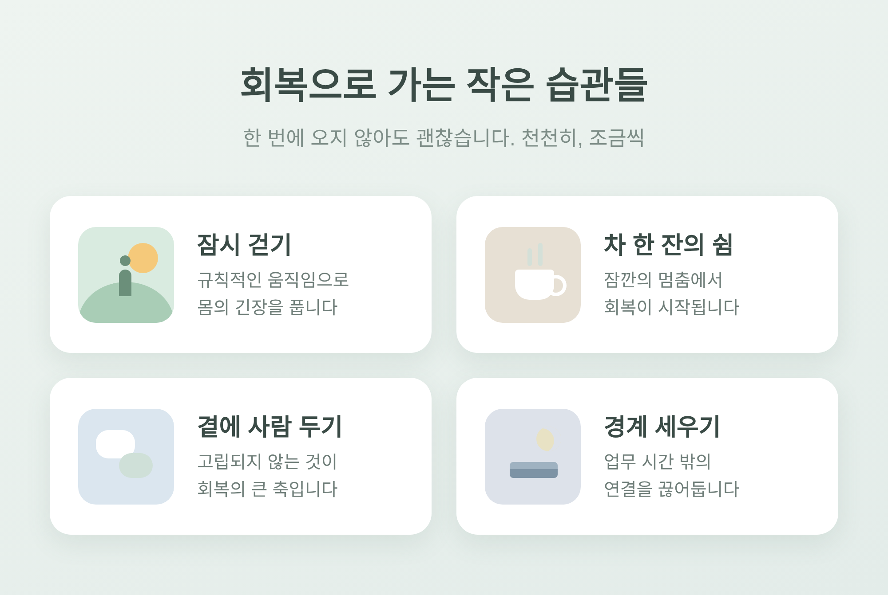

[상담] 직장인 번아웃 신호 알아차리고 회복하는 법 — 소진의 세 가지 차원부터 천천히

이번 글에서는 직장인 번아웃의 신호를 알아차리는 법과, 회복으로 가는 길을 정리해 보겠습니다.
먼저 한 가지 짚어두겠습니다. 이 글은 일반적인 정보를 전하는 글이며, 전문적인 진단이나 상담을 대체하지 않습니다. 마음이 무겁고 버겁다면, 혼자 견디기보다 전문가나 믿을 수 있는 사람에게 도움을 청하시길 권합니다.
세 줄로 먼저 요약하겠습니다.
- 번아웃은 잘 관리되지 못한 만성적인 직장 스트레스에서 옵니다.
- 신호는 소진, 냉소, 효능감 저하라는 세 방향으로 나타납니다.
- 회복은 휴식만이 아니라 근본 원인을 함께 다룰 때 단단해집니다.
번아웃은 '게으름'이 아닙니다
번아웃을 두고 의지가 약한 탓으로 여기는 시선이 아직 남아 있습니다.
세계보건기구(WHO)의 설명은 다릅니다.
WHO는 국제질병분류 11판(ICD-11)에서 번아웃을 "직업적 현상(occupational phenomenon)"으로 다룹니다. 흥미로운 점은, 이를 질병으로 분류하지는 않는다는 사실입니다. 사람들이 의료 서비스를 찾게 되는 이유 중 하나로 기술될 뿐입니다.
WHO의 정의는 이렇습니다.
"번아웃은 성공적으로 관리되지 못한 만성적 직장 스트레스로 인해 발생하는 증후군이다."
핵심은 '만성적'과 '직장'이라는 두 단어에 있습니다. 하루 이틀의 피로가 아니라, 오래 쌓이고 풀리지 못한 직무 스트레스라는 뜻입니다. WHO는 이 현상이 직업적 맥락에 한정된다고도 못 박습니다. 삶의 다른 영역을 설명하는 말로 함부로 끌어다 쓰지 말라는 당부입니다.
그러니 번아웃은 당신이 약해서 온 것이 아닙니다.
소진, 냉소, 효능감 저하 — 세 가지 차원
WHO는 번아웃을 세 가지 차원으로 규정합니다.
첫째, 에너지 고갈 또는 소진감입니다.
둘째, 자기 일에 대한 심리적 거리감이 커지거나, 일을 부정하고 냉소하는 감정입니다.
셋째, 직업적 효능감의 저하입니다.
이 틀은 심리학자 크리스티나 매슬랙의 연구에 뿌리를 둡니다. 1981년 매슬랙과 수전 잭슨이 만든 매슬랙 번아웃 척도(MBI)는 지금도 널리 쓰이는 측정 도구입니다. MBI 역시 번아웃을 세 갈래로 봅니다. 정서적 소진, 비인격화와 냉소, 그리고 개인적 성취감의 저하입니다.
정서적 소진은 더 이상 내어줄 마음의 자원이 남지 않은 상태입니다.
냉소는 일과 사람을 향해 부정적이고 무덤덤한 태도가 자라나는 것입니다.
성취감 저하는 자신과 자기 성과를 자꾸 낮게 매기게 되는 경향입니다.
WHO의 세 차원과 매슬랙의 세 차원은 사실상 같은 곳을 가리킵니다.

몸과 마음이 보내는 신호
번아웃은 어느 날 갑자기 닥치지 않습니다. 서서히, 조용히 쌓입니다.
그래서 알아차리는 일이 더 어렵습니다.
대표적으로 보고되는 신호를 정서, 신체, 행동으로 나눠 정리해 보겠습니다.
정서·심리적 신호
- 일에 대해 점점 냉소적이고 비판적으로 변합니다.
- 동료와 환경에서 정서적으로 멀어지고 무감각해집니다.
- 슬픔, 분노, 짜증, 무관심 같은 감정을 다루기가 힘들어집니다.
- 압도당하는 느낌, 더는 감당할 수 없다는 무력감이 듭니다.
신체적 신호
- 쉬어도 풀리지 않는 만성적인 피로와 에너지 고갈이 이어집니다.
- 불면처럼 수면 습관이 달라집니다.
- 두통, 복통, 소화기 문제 같은 몸의 증상으로 나타나기도 합니다.
행동·수행 신호
- 일을 시작하는 것 자체가 버겁고, 출근이 무겁게 느껴집니다.
- 집중이 흩어지고 일의 능률과 창의성이 떨어집니다.
- 동료나 고객에게 쉽게 조급해지고 짜증이 납니다.
- 술이나 다른 물질에 기대는 일이 늘기도 합니다.
이 신호들은 결국 앞서 본 세 차원이 일상에서 어떻게 드러나는지를 보여줍니다.
예전엔 즐겁던 일이 지금은 손도 대기 싫다면, 한 번쯤 멈춰 살펴볼 때입니다.
왜 이렇게까지 됐을까
번아웃의 정의 자체가 원인을 품고 있습니다. "성공적으로 관리되지 못한 만성적 직장 스트레스"라는 말 그대로입니다.
연구에서 가장 강력한 단일 예측 요인으로 꼽히는 것은 과도한 업무량입니다. 너무 많은 일, 주어진 지원으로는 기대를 채우기 어려운 시간, 혹은 그 둘이 겹친 상황입니다.
통제감의 부족도 큽니다. 업무 방식이나 일정, 업무량에 대해 발언권이 없을 때 사람은 쉽게 소진됩니다.
경계의 부재 역시 빼놓을 수 없습니다. 늘 이메일에 답할 수 있는 상태로 있고, 추가 업무를 계속 받아들이고, 쉬는 시간을 건너뛰는 패턴이 만성 스트레스로 이어집니다.
여기서 짚고 싶은 점이 하나 있습니다.
번아웃은 개인의 의지력 문제만이 아닙니다. 직무 환경과의 상호작용에서 비롯되는 일입니다. 그러니 회복도 혼자만의 몫일 수 없습니다.
회복으로 가는 길
회복 전략을 정리해 보겠습니다. 다만 이것은 정답이 아니라 '도움이 될 수 있는 방향'입니다. 사람마다, 상황마다 효과는 다릅니다.
근본 원인을 다루기
- 표면적인 휴가나 가벼운 자기돌봄에만 그치면 한계가 있습니다.
- 특히 업무량 같은 근본 원인을 함께 살피는 종합적인 접근이 필요합니다.
경계 세우기
- 업무 시간 밖의 연결을 끊고, 무리한 추가 업무는 정중히 거절해 봅니다.
- 자신의 시간과 건강한 습관을 지키는 한계선을 정합니다.
회복할 시간 확보하기
- 쉼 없이 달리는 대신, 회복 기간을 일정 안에 미리 넣어둡니다.
- 충분한 휴식, 규칙적인 운동, 건강한 취미가 받쳐줍니다.
마음을 진정시키기
- 마음챙김 호흡이나 짧은 명상도 신경계를 가라앉히는 데 도움이 될 수 있습니다.
- 길게 하지 않아도 괜찮습니다. 잠깐의 멈춤에서 시작합니다.
기쁨을 일정에 넣기
- 나를 기쁘게 하는 활동을 의도적으로 달력에 적어둡니다.
- 작은 즐거움이 소진을 상쇄하고 회복탄력성을 키웁니다.
혼자 두지 않기
- 문제 해결, 긍정적 재평가, 그리고 무엇보다 사회적 지지를 구하는 일이 중요합니다.
- 고립되지 않는 것. 이것이 회복의 큰 축입니다.

회복은 한 번에 오지 않습니다. 천천히, 조금씩 돌아옵니다.
이럴 땐 전문가의 도움을
자기돌봄만으로 충분하지 않은 순간이 있습니다. 다음과 같다면 미루지 말고 정신건강 전문가의 도움을 구하시길 바랍니다.
- 슬픔이나 무망감이 2주 이상 이어질 때
- 증상이 일, 관계 등 일상 기능을 무너뜨릴 때
- 기본적인 자기돌봄으로도 더는 나아지지 않을 때
- 공황, 극심한 무망감, 늘어나는 음주나 약물 사용이 나타날 때
특히 자해나 자살에 대한 생각, 일상적인 일조차 해내기 어려운 상태, 심한 공황이 있다면 즉시 도움을 청해야 합니다. 가까운 지역 정신건강복지센터나 정신건강 상담 창구, 또는 믿을 수 있는 사람에게 곧바로 연락하시길 바랍니다. 지금 많이 힘들다면, 그 마음을 혼자 안고 있지 않으셔도 됩니다.
번아웃과 우울증을 두고 헷갈리실 수도 있습니다.
번아웃은 대체로 직장 같은 특정 상황의 만성 스트레스에서 비롯되고, 그 원인이 줄면 시간이 지나며 나아지는 경향이 있습니다. 반면 우울증은 뚜렷한 원인 없이도 나타날 수 있는 정신건강 질환입니다. 번아웃에서는 일 밖의 사람과 삶에 여전히 관심은 있지만 너무 지쳐 다가가지 못하는 반면, 우울증에서는 흥미와 즐거움이 삶 전반에서 넓게 줄어듭니다.
다만 만성적이고 풀리지 않은 번아웃은 우울증의 위험 요인이 될 수 있다고도 합니다.
그러니 이 둘을 스스로 가려내려 애쓰기보다, 의심된다면 전문가의 평가를 받는 편이 안전합니다.
끝으로 한 마디만 더 드리겠습니다.
번아웃은 당신이 부족해서가 아니라, 너무 오래 열심이었다는 신호일지도 모릅니다.
신호를 알아차렸다면, 이미 회복의 한 걸음을 뗀 것입니다. 지치셨다면, 잠시 멈추고 손을 내미셔도 괜찮습니다.
다시 일어설 수 있겠냐고 물으신다면, 천천히 그럴 수 있다고 답하겠습니다.